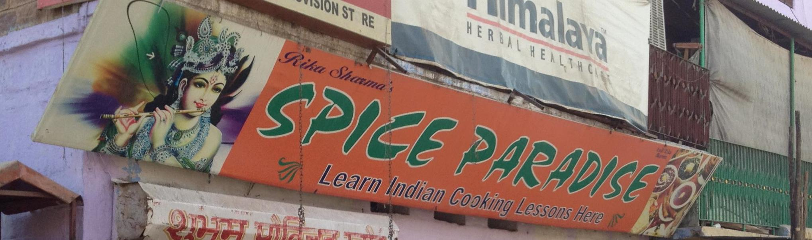

Welcome to Spice Paradise
As the name says, Spice Paradise is the perfect location to find natural and pure spices in Jodhpur, India. Flavour lovers will find the best of what India has to offer: red chili, ginger, cumin, cloves, pepper, tea spices, meat masala and more ! If you want to fully immerse yourself into Indian culture, we can also introduce you to both traditional and local Indian cuisine, through small organised cooking lessons.

Spice Paradise is located in Jodhpur, India, and offers cooking lessons and sells Indian spices. Run by husband and wife team, Anil and Rekha, Spice Paradise has become a the highlight for visitors that spend any amount of time in Jodhpur, Rajasthan.